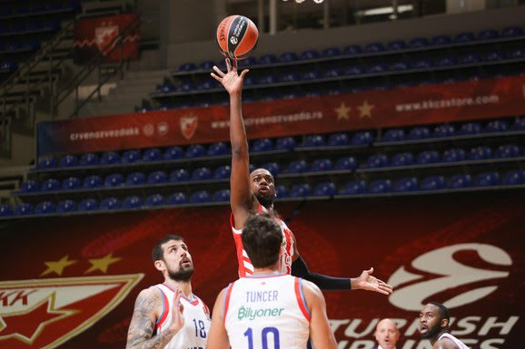

Košarkaši Crvene zvezde poraženi su u 22. kolu Evrolige od Efesa - 86:72.
Da je napadački jedna od najboljih ekipa na "starom kontinentu", Efes je pokazao baš protiv Crvene zvezde, pošto je sve dileme oko pitanja pobednika, rešio već u prvoj, a potvrdio u drugoj četvrtini. Domaći igrači su leteli po terenu, pogađali za dva, odlično šutirali za tri poena, dok crveno-beli nisu imali pravi odgovor na brzu igru u odbrani, a u napadu su se ređale greške.
Jeste im ovo treća utakmica u pet dana, ali ni to ne bi smeo da bude izgovor za jednu od najslabijih partije ove sezone tima s Malog Kamelegdana.

Loše je tim Dejana Radonjića otvorio utakmicu, dok su Atamanovi izabranici bili i više nego motivisani da poprave utisak nakon poraza u prošlom kolu od Zenita.
Od prvog do poslednjeg minuta meča u dvorani "Sinan Erdem" Efes je imao prednost i nije dozvolio crveno-belima da prvi put protiv njih slave u Istanbulu, a posle uvodnih nekoliko minuta, ona je već bila dvocifrena.
Uglavnom poenima sa distance i tri poena, Efes do prve osetnije razlike dolazi nakon četiri minuta, posle poena Šanlija (14:3). Nije mnogo vremena prošlo, a na semaforu je već pisalo 22:8, zahvaljujući Simonu, Buboi i Miciću. Srpski plejmejker je bio nezaustavljiv i kada god je bio na parketu prednost domaćina je rasla. S druge strane Crvena zvezda je delovala izgubljno, pa Efes prvu deonicu završava s velikom rezultatskom zalihom (29:13) i što je još zanimljivije, bez ijednog faula.
Znake života Crvena zvezda je počela da pokazuje u drugoj četvrtini, pošto je već na startu napravila mini-seriju 6:0 i smanjila zaostatak na deset poena (29:19). Međutim, svaki dobar nalet crveno-belih, domaćin bi poklopio trojkama, pa tako Larkin s dve brze stvari vraća na staro stanje (35:21).
Dosta nerezonskih šuteva i izgubljenih lopti obeležilo je ovaj period, a sredinom druge deonice Efes je već ima "plus 21" (46:25). Baš u tim momentima crveno-bele je zadesio maler, pošto je posle kontakta s Šanlijem Džordan Lojd ostao da leži na parketu. Iako povreda nije delovala ozbiljnije, Radonjić nije želeo da reskira, pa ga je ostavio na klupi do kraja meča. Agresivnom odbranom i individualnim rolama Larkina i Micića, Efes je u stilu NBA timova, "brojao" do 56 u prvom poluvremenu, pa naveliki odmor otišao s zalihom od 21 poena.
(AMA)